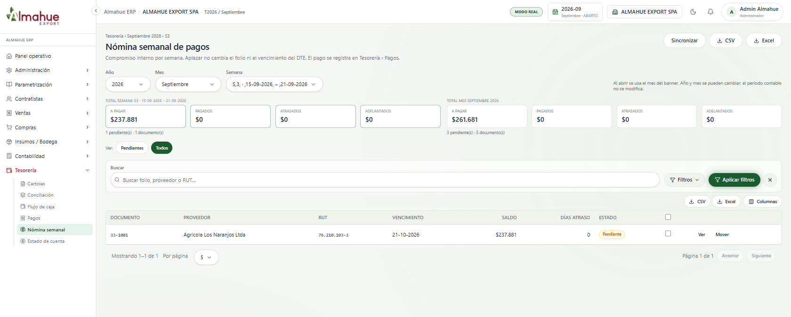
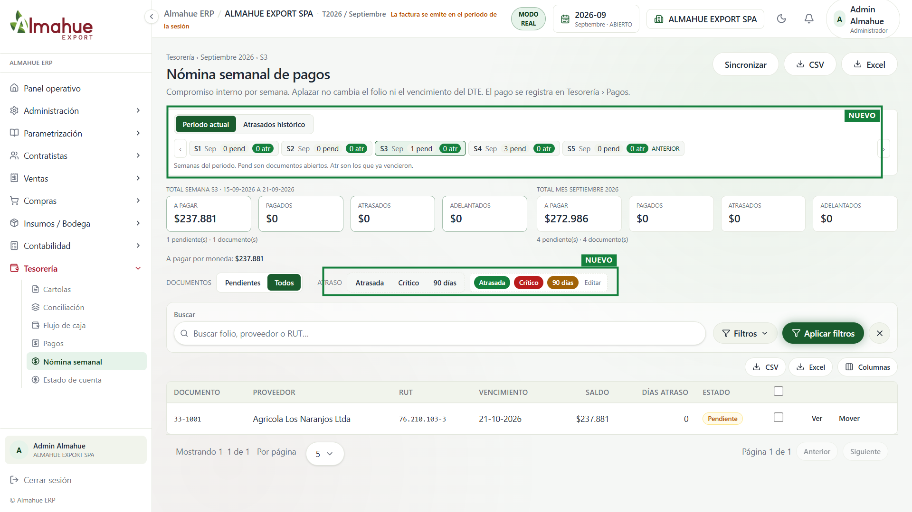
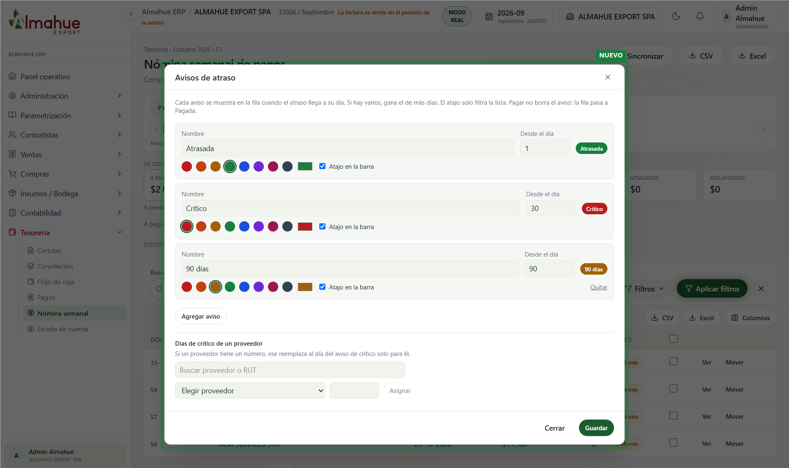
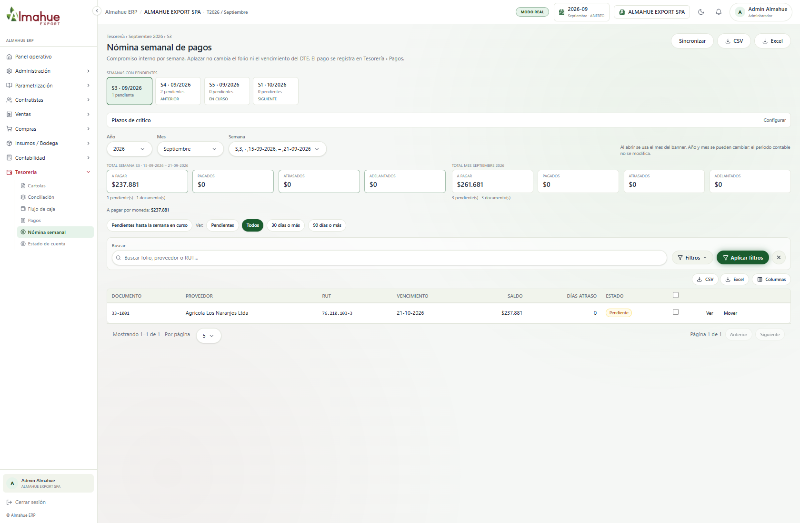
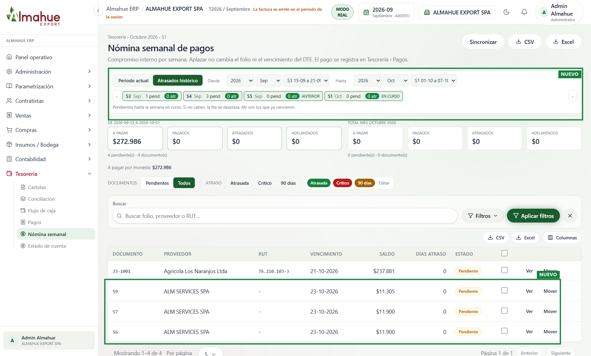

Empresa ALMAHUE EXPORT SPA, modo real. El antes es del 29/09. El después es la pantalla de hoy, 01/10, periodo 2026-09. Cada fila es la misma pantalla: a la izquierda como estaba, a la derecha como está ahora.
El recuadro verde y la etiqueta NUEVO están solo en la captura, no en el sistema. Un clic abre la imagen. La rueda o las teclas + y - hacen zoom. Izquierda y derecha cambian entre el antes y el después. Esc cierra.


Periodo actual lista las semanas del mes de la sesión. S3 de septiembre queda seleccionada, con 1 pendiente. S4 muestra 3. Atrasados histórico abre el rango hasta la semana en curso. A la derecha, Atraso filtra la lista y Editar abre los avisos. No se sincronizó ni se movió ningún documento.



Antes, S3 mostraba solo 33-1001 ($237.881). Atrasados histórico abre los pendientes hasta la semana en curso: de S3 de septiembre a S1 de octubre. Entran 59, 57 y 56 de ALM SERVICES, marcadas en verde. El total de ese rango es $272.986. Desde y hasta recortan el rango. No se movió ningún documento.